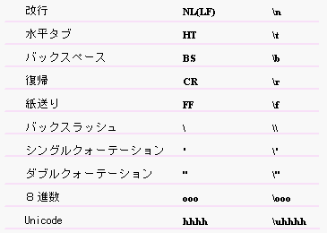

OZ言語クイックリファレンス
- Contents
- １．字句
２．型と変数
３．クラス
４．名前
５．例外処理
６．文
７．式
８．型変換
９．同期機構

- １．字句
OZ言語では、以下の字句を規定しています。
- コメント
- 識別子
- キーワード
- リテラル
- 演算子
- 区切子
- 空白文字
- １．１ コメント
- 2種類の形式でコメントが記述できます。
- /* から */ までの文字列
- // から改行文字 までの文字列
コメントは字句の区切りとしてのみ扱われます。
- １．２ 識別子
- 英字 (a-zA-Z) から始まり英数字 (a-zA-Z0-9) およびアンダースコア (_)
からなる任意の長さの文字列で、キーワード、空白文字の字句を含まないものが識別子です。
- １．３ キーワード
-
| abstract |
const |
float |
native |
super |
| bool |
continue |
for |
new |
syncronized |
| boolean |
default |
goto |
package |
this |
| break |
do |
if |
private |
throw |
| byte |
double |
implements |
protected |
throws |
| case |
else |
import |
public |
true |
| catch |
extends |
int |
return |
try |
| char |
false |
interface |
short |
void |
| class |
final |
locked |
static |
volatile |
| condition |
finally |
long |
switch |
while |
- １．４ リテラル
OZ言語がリテラルとして扱う字句には次のものがあります。
- 整数リテラル
- 浮動小数リテラル
- 文字リテラル
- 文字列リテラル
- 論理型リテラル
- NULL リテラル
-
- 整数リテラル
-
|
10進数整数定数 |
0 でない数字 (1-9) から始まる、数字 (0-9) のゼロ個以上の列 |
|
16進数整数定数 |
0x または 0X から始まる、数字 (0-9) および A から F までの英字の大文字または小文字
の1個以上の列 |
|
8進数整数定数 |
0から始まる、0から7までの数字 (0-7) の ゼロ 個以上の列 |
int型として扱われます。
- 浮動小数リテラル
-
- 非指数表現
- 整数部 (10進数整数定数)、小数点文字 (.)、小数部 (10進数整 数定数) の列
- 指数表現
- 非指数表現に加えて、 e または E、指数部 (+ または -、10進数整数定数の列)
の列
サフィックスとして f または F が存在する場合は、float 型、サフィックスがなければ、
doulbe 型として扱われます。
- 文字リテラル
- 文字をシングルクォーテーション (') で囲んだ文字列は、その文字(character)そのものを表す文字リテラルです。
非グラフィック文字に対しては、エスケープ表現(escape sequences)を用います。
char 型として扱われます。
＜エスケープ表現＞

- 文字列リテラル
- ゼロ個以上の文字の列をダブルクォーテーション (") でを囲んだ列
は、その文字の列を表す文字列リテラルです。非グラフィック文字に対しては、文字リテラルと同様にエスケープ表現を用います。
文字列定数はシステム定義のクラス型であるString型として扱われます。
- 論理型リテラル
- 次のキーワードは論理型リテラルです。
論理型の定数値として扱われます。
- NULLリテラル
- 次のキーワードはNULLリテラルです。
NULL リテラルは任意のクラス型の値となります。
- １．５ 演算子
-
|
++ |
-- |
+ |
- |
! |
* |
/ |
% |
= |
|
< |
> |
<= |
>= |
== |
!= |
&& |
|| |
=| |
|
*= |
/= |
%= |
+= |
-= |
&&= |
||= |
? : |
|
- １．６ 区切子
-
- １．７ 空白文字
-
- スペースキャラクタ (space character)
- 水平タブ (horizontal tab)
- 改行 (CR, LF, CR + LF のすべて)
- 紙送り (FF)
空白文字は字句の区切りとしてのみ扱われます。
- ２．型と変数
OZシステムの型には、基本型とクラス型があります。OZ言語の式は必ず型を持っています。初期化されない変数(ローカル変数、メソッドの仮引数、アトリビュート参照)は、型のデフォルト値を持っています。
- ２．１ 基本型
-
| 型 |
値 |
デフォルト |
サイズ |
最小値 |
最大値 |
| byte |
符号付き整数 |
0 |
8 bits |
-128 |
127 |
| short |
符号付き整数 |
0 |
16 bits |
-32768 |
32767 |
| int |
符号付き整数 |
0 |
32 bits |
-2147483648 |
2147483647 |
| long |
符号付き整数 |
0 |
64 bits |
-9223372036854775808 |
9223372036854775807 |
| float |
IEEE754 浮動小数 |
0.0ｆ |
32 bits |
±3.40282347E+38 |
±1.40239846E-45 |
| double |
IEEE754 浮動小数 |
0.0 |
64 bits |
±1.79769313486231570E+308 |
±4.94065645841246544E-324 |
| char |
Unicode文字 |
\u0000 |
(16 bits) |
\u0000 |
\uFFFF |
| bool |
true、false |
false |
(1 bit) |
− |
− |
| condition |
実行環境依存 |
− |
− |
− |
− |
（表中の\は、バックスラッシュです）
condition型については「９．同期機構」を参照してください。
- ２．２ クラス型
2種類のクラス型があります。
クラス型からオブジェクトが生成されます。クラス型はリファレンスで操作されます。
クラス型は以下の値を持つことができます。
初期化されないクラス型の変数のデフォルト値はnullです 。すなわち、
初期化の行われないクラス型の変数は、どのオブジェクトリファレンスも保持していません。これをnull状態と呼びます。
- ３．クラス
OZシステムにはネットワークを介してメソッド起動ができるオブジェクトとローカル環境で利用されるオブジェクトが存在します。ネットワークを介してメソッド起動できるオブジェクトをグローバルオブジェクトと呼びます。グローバルオブジェクトはcell型のクラスのインスタンスです。
- ３．１ クラス宣言
クラス宣言文:
[クラス修飾子] class クラス名 ［上位クラス］ { メンバリスト};
cell型の場合には、キーワードclass の代わりに キーワード cell
を用います。
クラス修飾子:
|
abstract |
抽象クラス。このクラスを直接の型とするオブジェクトを生成することができません。
abstract メソッドを持つクラスはこの属性を持たなければいけません。
逆に、 この属性を持たないクラスは、上位クラスで定義されたすべてのabstract
メソッドに対して、再定義により実装定義を行う必要があります。 |
|
final |
このクラスを上位クラスとして宣言することができません。すなわち、このクラスの下位クラスを定義することができません。
この修飾子を abstract 属性と共に指定することはできません。
逆に、この属性を持たないクラスはその下位クラスを定義することができます。 |
注) cell型の抽象クラスは宣言できません。
クラス名:
コンパイル単位でユニークな識別子を用います。
上位クラス:
: [*] クラス名［, クラス名］
複数のクラスを上位クラスとして宣言できます。上位クラスを宣言することにより、クラス宣言文で定義しているクラスがそのクラスのオブジェクトとしても振る舞うことができるようになります。
上位クラスの直前に*をつけると、上位実装クラスの指定になります。下位クラスは上位実装クラスの動作部を継承し、その他の上位クラスのインタフェース部を継承します。上位実装クラスはたかだか１つです。
{メンバリスト}
メンバの宣言。メンバとしてアトリビュート、メソッド、コンストラクタが定義でき、定義のためには各々の宣言文を用います。
注)
cell型のメンバとして開発者がコンストラクタを宣言することはできません。システムがcell型のコンストラクタを規定しています。
- ３．２ アトリビュート宣言
アトリビュート宣言文:
[アクセスレベル] [アトリビュート修飾子] 型名 アトリビュート名;
アクセスレベル:
|
protected |
定義クラスのオブジェクトのメンバおよび子孫クラスのオブジェクトのメンバからアクセスできます。 |
|
（なし） |
定義クラスのオブジェクトのメンバからアクセスできます。 |
アトリビュート修飾子:
|
final |
コンストラクタ本体の定義文でのみ、このアトリビュートへの代入を行うことができます。 |
|
transient |
オブジェクトが永続化される場合にこのアトリビュートは切り離されます。
オブジェクトが再起動された後の値は保証されません。 |
型名:
基本型あるいはクラス型を指定します。
アトリビュート名:
クラス単位でユニークな識別子を用います。
- ３．３ メソッド宣言
メソッド宣言文:
[アクセスレベル] [メソッド修飾子] 型名 メソッド名(引数リスト)[{文}];
アクセスレベル:
|
public |
任意のクラスからアクセスできます。 |
|
protected |
定クラスのオブジェクトのメンバおよびおよび子孫クラスのオブジェクトからアクセスできます。 |
|
（なし） |
定義クラスのオブジェクトのメンバからアクセスできます。 |
メソッド修飾子:
|
static |
クラスメソッド。すなわち、このメソッドはクラスに対して実行することができます。
このメソッド内ではオブジェクト自身へのリファレンスで ある this を使用できません。また、アトリビュートを参照することはできません。 |
|
abstract |
抽象メソッド。実装定義を持たないメソッドの宣言です。 |
|
final |
このクラスの下位クラスで再定義 (オーバーライ ド) することができないという指定です。この修飾子は、abstract
修飾子と共に指定することができません。 |
|
locked |
このメソッドに対するメソッド起動はモニタによる排他制御が行われます。 |
|
once |
このメソッドの実装が評価されるのは一回目のメソッド起動時のみです。
戻り値を持つメソッドの場合、二回目以降のメソッド起動時には一回目のメ ソッド起動時の値が戻り値となります。 |
型名:
基本型あるいはクラス型を指定します。
型名に void を指定することができますが、これは戻り値のないことを意味しています。
メソッド名:
クラス単位でユニークな識別子を用います。
引数リスト
引数のリスト。
１つの引数は 型名 仮引数名 で表現します。
{文}
メソッド本体の定義を表わす複文です。一連の文から構成されメソッドの振舞いが表現されます。
abstract修飾子を持つメソッドはこの部分を省略します。
- ３．４ コンストラクタ宣言
注意） cell型クラス宣言の場合、開発者がコンストラクタ宣言を行うことはできません。システム定義のコンストラクタが用意されており、インスタンス生成時にそのコンストラクタが起動されます。
コンストラクタ宣言文:
new コンストラクタ名 (引数リスト) {文};
new はキーワードです。
注意）コンストラクタにはアクセスレベルを指定することができません。任意のクラスからアクセスできます。
コンストラクタ名:
同一クラス内で、メソッド名と重複するコンストラクタ名を指定してはいけません。
引数リスト
引数のリスト。
１つの引数は 型名 仮引数名 で表現します。
{文}
コンストラクタ本体の定義を表わす複文です。一連の文から構成されコンストラクタの振舞いが表現されます。
- ３．５ class型とcell型の相違
クラス宣言文の相違
- class型はclass，cell型はcellというキーワードを、型の指定に用います。
- class型の宣言では、cell型のクラスを上位クラスに指定することができません。逆に、cell型のクラスはclass型のクラスを上位クラスに指定することができません。
- cell型のコンストラクタはシステムが定義しているので、コンストラクタメンバをクラス定義のメンバリストに記述することはできません。
アトリビュート宣言文の相違
メソッド宣言文の相違
- cell型のメソッド定義では、abstract修飾子を指定することができません。
- cell型のメソッド本体の定義では、自分自身への参照を表わす this
を指定することができません。
コンストラクタ宣言文の相違
- ３．６ オブジェクトの生成
オブジェクトを生成するためにはそのクラス型の変数を用意し、変数に対してコンストラクタを実行します
(インスタンス生成式： クラス型変数 ＝＞ コンストラクタ名( [ 引数リスト
] ))。
コンストラクタは以下の特徴を持っています。
- コンストラクタは下位クラスに継承されません。
- abstractクラスに対してコンストラクタを呼び出すことはできません。
- 上位実装クラスを持つクラスのコンストラクタは上位実装クラスのコンストラクタを１つ呼び出さなければいけません。
- ３．７ オブジェクトの動作
オブジェクトはメソッド起動によって動作します。オブジェクトへのリファレンスを保持する式に対して、実行するメソッドを指定することで、オブジェクトを動作させることができます。
（メソッド起動式:[ クラス型の式 −＞ ] メソッド名( [ 引数リスト ] )
）
- ３．８ クラスの構造とバージョン管理
OZコンパイラは、クラス宣言をインタフェース部と動作部に分けて扱います。
|
インタフェース部 |
- publicメソッドのシグネチャ
- 上位クラスの情報。
|
|
動作部 |
インタフェース部以外の部分。すなわち、
- アトリビュート
- メソッド本体の定義
- public以外のアクセスレベルを持つメソッドのシグネチャと本体定義
- コンストラクタのシグネチャと本体定義
|
下位クラスは上位実装クラスからインタフェース部と動作部を継承し、上位実装クラス以外の上位クラスからインタフェース部を継承します。
インタフェース部と動作部はそれぞれ識別子を持っています。これをクラス識別子と呼びます。
クラス名、インタフェース部のクラス識別子、動作部のクラス識別子を対応づける情報をクラス情報といいます。OZコンパイラにはバージョン管理機能があり、インタフェース部と動作部を別々にバージョン管理します。
- ４． 名前
-
OZ 言語では、以下の識別子はすべて異なる名前空間を持ちます。
- クラス名
- メソッド名およびコンストラクタ名
- アトリビュート名
- メソッド、コンストラクタ、catch 節の仮引数、ローカル変数
- ラベル
- ５．例外処理
throw文とtry文を用いると、プログラムで発生する例外をプログラマが制御することができます。
例外にはシステム例外とユーザ定義例外があります。任意のクラスをユーザ定義例外として扱うことができます。
- ５．１ throw 文
throw文により例外を発生させることができます。ｔhrow文は任意のオブジェクトを１つ投げることができ、それが例外として扱われます。
例外の送出
UserException e;
if (exp1 == null) {
e => create("exp1 failed.");
throw e;
}
UserExceptionというクラスのオブジェクトを生成し、exp1の値がnullの場合に例外を発生させています。このUserExceptionクラスは以下のように定義されています。
例外のユーザ定義
class UserException: *RuntimeException {
new create(String msg) {
super->init(msg);
}
}
- ５．２ try 文
try文により任意の例外を捕捉することができます。例外は任意のオブジェクトです。
例外処理のプログラミング
try {
文1;
...
文n;
} catch (例外A e) {
// 例外Aが発生した場合の処理
文A1;
...
文A2;
} catch (例外B e) {
// 例外Bが発生した場合の処理
文B1;
...
文B2;
} catch (NullPointerException e) {
// システム例外
文S1;
...
文S2;
}
finally {
// 例外が発生した場合に必ず実行される処理
文F1;
...
文F2;
}
}
文1から文nに向かって順番に処理が行われます。途中で例外が発生したら、それが捕獲されます。
捕獲した例外の型がAであると、文A1; ... 文A2;、そして、文F1; ... 文F2;が実行されます。
捕獲した例外の型がBであると、文B1; ... 文B2;、そして、文F1; ... 文F2;が実行されます。
捕獲した例外の型がNullPointerExceptionであると、文S1; ... 文S2;、そして、文F1;
... 文F2;が実行されます。
finally節は記述しなくてもかまいません。finally節を記述すると、必ずそれが実行されます。
- ５．３ システム例外
-
|
例 外 |
|
意 味 |
|
RuntimeException |
|
実行時例外が発生しました。 |
|
ArithmeticException |
|
ゼロによる整数の除算、剰余算など、算術上の例外状況が発生しました。 |
|
ArrayStoreException |
|
配列の構成要素に、その配列の構成要素の型と代入等価でない値を代入しようとしました。 |
|
ClassCastException |
|
クラス型への変換が要求されましたが、実際にリファレンスする値が型に適合しません |
|
NullPointerException |
|
オブジェクトをリファレンスする必要がある場所で、null参照が行われました。 |
|
SecurityException |
|
セキュリティ違反を検知しました。 |
|
CellNotFoundException |
|
セルが検出できませんでした。 |
システム例外は、try文の catch節以外では明示的に発生させること（throw）ができません。
- ６．文
- ６．１ 複文
- { [文] }
- ６．２ ローカル変数宣言文
- 型名 ローカル変数名［ = 初期値 ］;
- ６．３ 空文
- ;
- ６．４ ラベル文
- ラベル名 : 文
- ６．５ 式文
- 式 ;
- ６．６ if 文
- if (式) 文;
if (式) 文1 else 文２
- ６．７ switch 文
- switch (式) {文}
switch(式) {
case 定数式: 文
case 定数式: 文
...
default: 文
}
- ６．８ while文
- while (式) 文
- ６．９ do文
- do {文} while (式);
- ６．１０ for文
- for ([文Init]; [式]; 式文Update) 文
- ６．１１ break文
- break [ラベル名] ;
- ６．１２ continue文
- continue [ラベル名] ;
- ６．１３ return文
- return [式] ;
- ６．１４ throw文
- throw [式];
cauch節で用いられた場合、式を省略することができます。
- ６．１５ ｔｒｙ文
- try 複文1 [catch(型名 変数名)｛文｝［,..., finally 複文］]
try文の中でthrow文を記述することができます。
- ７．式
- 式は左から評価されます。
- ７．１ 一次式
-
|
識別子 |
ローカル変数名
メソッドの仮引数名
|
|
アトリビュート参照 |
アトリビュート名
そのアトリビュートが定義されたクラスのメソッド本体で、アトリビュートを参照するために用いられる式
|
|
リテラル |
「1．字句」で定義されているリテラル
|
|
this |
this
実行中のメソッドを持つオブジェクトを参照する式
|
|
括弧で囲んだ式 |
（ ）
任意の式を括弧記号で囲んだ式
|
|
メソッド起動式 |
[ クラス型の式 −＞ ] メソッド名( [ 引数リスト ] )
クラス型のメソッド起動を行なう式
->から左を省略するとメソッドを持つオブジェクトに対するメソッド起動式。
|
|
インスタンス生成式 |
クラス型変数 ＝＞ コンストラクタ名( [ 引数リスト ] )
オブジェクト（クラス型のインスタンス）を生成する式
|
- ７．２ 演算子とその評価順序
優先
順位 |
演算子 |
オペランドの型 |
結合的 |
意 味 |
| 1. |
++ |
数値型 |
右 |
前置インクリメント（単項演算子）
後置インクリメント（単項演算子） |
| -- |
数値型 |
右 |
前置デクリメント（単項演算子）
後置デクリメント（単項演算子） |
| + |
数値型 |
右 |
正を表わす
＝オペランドの値（単項演算子） |
| - |
数値型 |
右 |
負を表わす
＝オペランドの値に(-1)を乗じたもの（単項演算子） |
| ! |
論理型 |
右 |
論理的な余数
=オペランドの値がtrueならばfalse，falseならばtrue．
（単項演算子） |
| 2． |
* |
数値型, 数値型 |
左 |
乗算（算術演算子の乗法演算子） |
| / |
数値型, 数値型 |
左 |
除算（算術演算子の乗法演算子） |
| % |
数値型, 数値型 |
左 |
剰余算（算術演算子の乗法演算子） |
| 3. |
+ |
数値型, 数値型 |
左 |
加算（算術演算子の加法演算子） |
| - |
数値型, 数値型 |
左 |
引算（算術演算子の加法演算子） |
| 4. |
> |
数値型, 数値型 |
左 |
より大きい（関係演算子） |
| < |
数値型, 数値型 |
左 |
より小さい（関係演算子） |
| >= |
数値型, 数値型 |
左 |
以上（関係演算子） |
| <= |
数値型, 数値型 |
左 |
以下（関係演算子） |
| 5. |
== |
基本型, 同一の基本型 |
左 |
等しい（等値演算子） |
| == |
クラス型, null |
左 |
等しい（等値演算子） |
| != |
基本型, 同一の基本型 |
左 |
等しくない（等値演算子） |
| != |
クラス型, null |
左 |
等しくない（等値演算子） |
| 6. |
&& |
論理型, 論理型 |
左 |
論理積（論理演算子の論理積演算子） |
| 7. |
|| |
論理型, 論理型 |
左 |
論理積（論理演算子の論理積演算子） |
| 8. |
? : |
論理型, 型, 同一の型 |
右 |
論理型がtrueならば第2オペランドを評価し、
falseならば第3オペランドを評価する（条件演算子） |
| 9. |
= |
識別子or
アトリビュート参照式,
型 |
右 |
単純な代入（代入演算子） |
| =| |
識別子or
アトリビュート参照式,
型 |
右 |
強制代入（代入演算子） |
*=
/=
%=
+=
-= |
識別子or
アトリビュート参照式,
数値型 |
右 |
複合代入（代入演算子） |
&&=
||= |
識別子or
アトリビュート参照式,
論理型 |
右 |
複合代入（代入演算子） |
表中の「型」というのは、基本型あるいはクラス型を意味します。
「基本型」には、condition型は含まれません。
- ８．型変換
代入や比較、あるいはメソッド起動の戻り値、引数は、代入等価な型に対して有効です。恒等変換、基本型のワイドニング変換、クラス型のワイドニング変換によって可能な型は代入等価です。
強制代入演算子を使用すると、代入等価な型に加えて、基本型のナローイング変換、クラス型のナローイング変換によって可能な型にも代入を行うことができます。
- ８．１数値型の昇格と変換
代入や比較に対して、以下の変換は暗黙に行われます。(型の昇格)
- 整数型同士で桁数の小さな型から大きな型への変換
- floatからdoubleへの変換
- 整数型から浮動小数型への変換
以下の変換を強制代入演算子を利用して明示的に行うことができます。
- 整数型同士で桁数の大きな型から小さな型への変換
- double型からfloat型への変換
- 浮動小数型から整数型への変換
- ８．２ クラス型の変換
以下の代入は暗黙的に行われます。
- クラス型 Tの子孫クラスの型 を S とすると、S を T に代入すること。
以下の代入を強制代入演算子を利用して明示的に行うことができます。
- クラス型 Tの子孫クラスの型 を S とすると、T を S に代入すること。
- ９．同期機構
同期機構によってマルチスレッドプログラミングが可能になります。OZシステムはモニタと条件変数いう機構を採用して、排他制御と同期を行います。
排他制御の単位はオブジェクトです。
９．１ モニタによる排他制御
排他制御を行って起動したいメソッドには、修飾子 locked を指定して宣言します。
そのメソッドが起動されているときには、そのオブジェクトへのアクセスがブロックされます。
例: locked修飾子
class Project {
Array files;// files in this Project
new create(){ .... }
public Array getFiles() { .... }
public void setFiles(Array f) { .... }
public void addFile(String fileName) { .... }
public locked void removeFile(String fileName) { .... }
public locked void removeAllFiles() { .... }
public int getNumOfFiles() { .... }
}
|
- ProjectクラスのオブジェクトaProjectが管理しているファイルを削除するメソッドremoveFile、removeAllFiles
が起動されるときには、モニタによる排他制御がかかります。
ファイルを削除するメソッドが起動されているときには、オブジェクトaProjectに対するメソッド起動がロックされています。
- ９．２ 条件変数による同期機構
condition型の変数は条件変数を表わします。
OZシステムの条件変数には、wait、signal、signalAllの操作が提供されています。
- wait： 実行を停止して、モニタの実行権を解放します。
- signal： 同じ条件変数で wait を実行しているスレッドの実行を再開します。
- signalAll： 同じ条件変数で wait を実行しているすべてのスレッドの実行を再開します。
(c) 1996-1998 IPA, ETL, AT21, FSIABC, FXIS,
InArc, MRI, NUL, SBC, Sharp, TEC, TIS. All rights reserved.